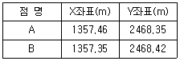
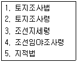

지적기능사 (2010-01-31 기출문제)
1과목: 지적일반(임의구분)
1. 축척변경 시행지역의 토지소유자가 5명이하 일 때에 토지소유자 중 몇 명을 축척변경위원회의 위원으로 위촉하여야 하는가?
- 토지소유자 전원을 위촉한다.
- 토지소유자의 과반수를 위촉한다.
- 토지소유자 대표 1인을 위촉한다.
- 토지소유자 전원을 위촉하지 않아도 된다.
(정답률: 80%)

2. 다음 중 지번의 구성에 대한 설명으로 가장 옳은 것은?
- 지번은 본번으로만 구성한다.
- 지번은 부번으로만 구성한다.
- 지번은 기호로만 구성한다.
- 지번은 본번과 부번으로 구성한다.
(정답률: 92%)
3. 사람의 신분에 관한 기록으로 정의되는 호적을 지적과 비교할 때, 호적의 성명에 해당하는 역할을 하는 지적의 기재사항은?
- 토지소재
- 지번
- 면적
- 지목
(정답률: 77%)
4. 다음 중 지적공부의 복구 자료에 해당하지 않는 것은?
- 측량준비도
- 측량결과도
- 복제된 지적공부
- 토지이동정리결의서
(정답률: 72%)
5. 지적공부에 등록하는 면적의 결정 단위 기준은? (단, 지적도의 축척이 600분의 1인 지역과 경계점좌표 등록부에 등록하는 지역의 토지 면적을 등록하는 경우는 고려하지 않음)
- 1m2
- 10m2
- 100m2
- 1000m2
(정답률: 71%)
6. 지적측량 중 세부측량은 위성기준점, 통합기준점, 지적기준점 및 경계점을 기초로 하여 어떤 방법에 따라야 하는가?
- 광파기측량방법
- 평판측량방법
- 전파기측량방법
- 사진측량방법
(정답률: 84%)
7. 축척이 1/1200 인 도면에서 도곽선의 신축량이 x1= -0.6㎜, x2= -0.8㎜ y1= -0.8㎜ y2= -1.0㎜ 인 경우 도곽신축에 대한 면적보정 계수는?
- 1.0083
- 1.0043
- 0.9947
- 0.9887
(정답률: 47%)
8. 다음 중 지적도의 축척에 해당하지 않는 것은?
- 1/500
- 1/1000
- 1/2500
- 1/3000
(정답률: 79%)
9. 다음 중 도면에 등록하는 동.리의 행정구역선은 얼마의 폭으로 제도하여야 하는가?
- 0.1㎜
- 0.2㎜
- 0.3㎜
- 0.4㎜
(정답률: 58%)
10. 다음 중 토지조사사업 당시의 조사 내용에 해당하지 않는 것은?
- 토지소유권
- 토지가격
- 지질
- 지형. 지모
(정답률: 75%)
11. 토지소유자는 신규등록 또는 등록전환할 토지가 있는 경우 그 사유가 발생한 날부터 최대 얼마 이내에 지적소관청에 신청하여야 하는가?
- 15일
- 30일
- 45일
- 60일
(정답률: 79%)
12. 다음 중 법지적에 대한 설명으로 옳은 것은?
- 지적제도의 발전 단계 중 가장 오래된 것이다.
- 토지의 활용 정보를 제공하는 것이 주요 목적이다.
- 면적 본위로 운영되는 지적제도이다.
- 토지소유권의 한계 설정이 강조되는 지적제도이다.
(정답률: 71%)
13. 다음 중 신규등록에 의한 토지의 이동이 있어 지적공부를 정리하여야 하는 경우 지적소관청이 작성하여야 하는 것은?
- 토지이동정리 결의서
- 신규등록정리 결의서
- 등기부등본정리 결의서
- 부동산등기부 결의서
(정답률: 68%)
14. 다음 일반적인 경계의 구분 중 측량사에 의하여 측량이 행해지고 지적 관리청의 사정에 의하여 확정된 토지 경계는?
- 고정경계
- 지상경계
- 보증경계
- 인공경계
(정답률: 80%)
15. 교회법에 따른 지적삼각보조점을 관측한 결과가 아래와 같을 때 연결교차는 얼마인가?

- 0.11m
- 0.13m
- 0.15m
- 0.17m
(정답률: 66%)
16. 다음 중 지적의 발생설과 거리가 먼 것은?
- 과세설
- 치수설
- 지배설
- 권리설
(정답률: 84%)
17. 다음 중 중앙지적위원회의 부위원정이 되는 자는?
- 국토해양부 지적업무 담당 과장
- 국토해양부 지적업무 담당 국장
- 국토해양부 차관
- 국토해양부 장관
(정답률: 74%)
18. 다음 중 지목의 설정에 대한 설명으로 옳지 않는 것은?
- 토지가 일시적 용도로 사용되는 경우 지목을 변경한다.
- 토지이용현황에 의한 지목의 유형은 28가지로 구분하여 정한다.
- 1필지마다 하나의 지목을 설정한다.
- 1필지가 둘 이상의 용도로 활용되는 경우에는 주된 용도에 따라 지목을 설정한다.
(정답률: 80%)
19. 다음 중 지적서고의 설치 및 관리기준에 대한 설명으로 옳지 않은 것은?
- 지적사무를 처리하는 사무실과 연접하여 설치한다.
- 제한구역으로 지정하고 인화물질의 반입을 금지한다.
- 출입자는 지적소관청의 직원들로 한정한다.
- 지적공부, 지적 관계서류 및 지적측량장비만 보관한다.
(정답률: 70%)
20. 다음 중 도면 제도시 붉은색으로 제도하여야 하는 것은? (단, 토지의 이동에 따른 도면을 정리하는 경우는 고려하지 않음)
- 도곽선
- 지번
- 지목
- 제명
(정답률: 83%)
2과목: 지적측량(임의구분)
21. 토렌스시스템의 일반적 이론과 가장 거리가 먼 것은?
- 거울이론
- 보험이론
- 커튼이론
- 점증이론
(정답률: 88%)
22. 다음 중 지상경계를 새로이 결정하려는 경우의 그 기준이 옳은 것은?
- 토지가 해면 또는 수면에 접하는 경우 : 평균 조위면
- 공유수면매립지의 토지 중 제방을 토지에 편입하여 등록하는 경우 : 바깥쪽 어깨부분
- 연접되는 토지 간에 높낮이 차이가 있는 경우: 그 구조물 등의 상단부
- 도로에 절토된 부분이 있는 경우:그 경사면의 하단부
(정답률: 80%)
23. 다음 중 도곽선의 역할로 보기 어려운 것은?
- 인접 도면과의 접합 기준선
- 지적 측량 준비도에서 북방향의 기준
- 지적측량 기준점 전개시의 기준선
- 경계점좌표등록부의 접합기준
(정답률: 61%)
24. 다음 중 지적도 및 임야도에 등록하여야 할 사항에 해당하지 않는 것은?
- 지적도면의 제명
- 도곽선과 그 수치
- 일람도
- 지번 및 지목
(정답률: 66%)
25. 축척이 1/1200 인 지적도상에 1변이 2cm로 등록된 정사각형 모양인 토지의 실제면적은 얼마인가?
- 144m2
- 288m2
- 480m2
- 576m2
(정답률: 54%)
26. 다음 중 지적기준점에 해당하지 않는 것은?
- 지적수준점
- 지적도근점
- 지적삼각보조점
- 지적삼각점
(정답률: 83%)
27. 다음 중 경계의 결정 원칙에 해당하는 것은?
- 축척종대의 원칙
- 주지목추종의 원칙
- 평등배분의 원칙
- 선등록우선의 원칙
(정답률: 73%)
28. 다음 중 신라시대의 토지측량에 사용된 구장 산술에서 구분한 토지의 형태에 해당하지 않는 것은?
- 방전
- 구분전
- 원전
- 규전
(정답률: 62%)
29. 경위의측량방법에 따른 세부측량의 방법으로 옳은 것은?
- 도선법 또는 방사법
- 도선법 또는 교회법
- 교회법 또는 지거법
- 방사법 또는 지거법
(정답률: 53%)
30. 다음 중 시대에 따른 지적제도의 연결이 옳지 않은 것은?
- 고구려 - 경무법
- 백제 - 두락제
- 신라 - 결부법
- 고려 - 역분전
(정답률: 66%)
31. 다음 중 경계점의 위치를 평면직각좌표(X.Y)를 이용하여 등록 관리하는 지적제도는?
- 도해지적
- 3차원지적
- 수치지적
- 다목적지적
(정답률: 74%)
32. 다음 중 1필지로 정할 수 있는 기준이 옳지 않는 것은?
- 지번부여지역의 토지
- 동일한 소유자
- 연속된 지반
- 서로 다른 용도
(정답률: 70%)
33. 다음 중 지번을 부여하는 진행방향에 따른 분류에 해당하지 않는 것은?
- 사행식
- 기우식
- 단지식
- 방사식
(정답률: 67%)
34. 다음 중 지적삼각 보조점 측량의 망 형태에 해당하는 것은?
- 삽입망
- 폐합망
- 왕복망
- 교회망
(정답률: 63%)
35. 조선시대의 토지 등록 장부로 오늘날의 토지 대장과 같은 양안은 몇 년마다 한 번씩 양전을 실시하여 새로운 양안을 작성하였는가?
- 10년
- 20년
- 30년
- 50년
(정답률: 87%)
36. 다음 중 경계점좌표등록부의 정리 방법으로 옳지 않는 것은?
- 부호도의 각 필지의 경계점부호는 아라비아 숫자로 연속하여 부여한다.
- 토지의 빈번한 이동정리로 부호도가 복잡한 경우에 각 필지의 경계점부호는 아래 여백에 새로이 정리 할 수 있다.
- 부호도의 각 필지의 경계점부호는 오른쪽 위에서 부터 왼쪽으로 경계를 따라 부여한다.
- 분할된 경우의 부호도 및 부호에는 새로이 결정된 경계점의 부호를 그 필지의 마지막부호 다음 번호부터 부여한다.
(정답률: 77%)
37. 축척변경 시행지역의 토지소유자는 시행공고일 부터 최대 몇 일 이내에 시행공고일 현재 점유하고 있는 경계에 국토해양부령으로 정하는 경계점표지를 설치하여야 하는가?
- 10일 이내
- 15일 이내
- 20일 이내
- 30일 이내
(정답률: 46%)
38. 축척이 1/1200 인 지적도에서 원면적이 3000m2인 일필지를 분할하는 경우 , 분할 후의 각 필지의 면적이 합계와 분할 전 면적과의 오차의 최대 허용범위는?
- 30m2
- 38m2
- 44m2
- 54m2
(정답률: 57%)
39. 다음 중 토지의 이동에 따라 경계선을 말소하는 경우의 제도 작업 기준으로 옳은 것은? (단. 경계의 길이가 짧은 경우는 고려하지 않음)
- 검은색의 짧은 교차선을 약 3mm 간격으로 제도한다.
- 검은색의 짧은 교차선을 약 3cm 간격으로 제도한다.
- 붉은색의 짧은 교차선을 약 3mm 간격으로 제도한다.
- 붉은색의 짧은 교차선을 약 3cm 간격으로 제도한다
(정답률: 54%)
40. 지적도를 갖춰두는 지역에서 평판측량방법에 따른 세부측량을 하는 때에 거리의 측정단위는 얼마인가?
- 1cm
- 5cm
- 10cm
- 50cm
(정답률: 50%)
3과목: 지적공부정리(임의구분)
41. 우리나라 지적관련 법령의 변천과정을 순서대로 바르게 나열한 것은?

- 1-2-3-4-5
- 1-3-2-4-5
- 1-4-2-3-5
- 1-2-4-3-5
(정답률: 63%)
42. 다음 중 지적측량을 하여야 하는 경우가 아닌 것은?
- 토지를 등록전환하는 경우
- 토지를 분할하는 경우
- 토지를 합병하는 경우
- 토지를 신규등록하는 경우
(정답률: 77%)
43. 연 왕골 등이 자생하는 배수가 잘 되지 아니하는 토지의 지목은 무엇으로 설정하여야 하는가?
- 전
- 답
- 유지
- 구거
(정답률: 66%)
44. 다음 중 삼국시대부터 찾아볼 수 있는 오늘날의 지적(地積)과 유사한 토지에 관한 기록과 관계가 없는 것은?
- 도적
- 장적
- 전적
- 판적
(정답률: 67%)
45. 임야대장 및 임야도에 등록된 토지를 토지대장 및 지적도에 옮겨 등록하는 것을 무엇이라 하는가?
- 신규 등록
- 등록전환
- 토지분할
- 지목변경
(정답률: 88%)
46. 전자면적측정기에 따른 면적측정은 도상에서 몇 회 측정하는 것을 기준으로 하는가?
- 1회
- 2회
- 3회
- 4회
(정답률: 87%)
47. 임야대장 및 임야도에 등록하는 토지의 지번은 숫자 앞에 어떠한 기호를 표기하는가?
- 산
- 임
- 토
- 매
(정답률: 85%)
48. 우리나라에서 최초로 지적이라는 용어가 공식적으로 쓰인 것은?
- 토지조사령
- 내부관제
- 토지조사법
- 삼림법
(정답률: 48%)
49. 다음 중 토지대장의 일반적인 유형에 해당하지않는 것은?
- 장부식 대장
- 편철식 대장
- 카드식 대장
- 공유식 대장
(정답률: 70%)
50. 다음 중 지적의 기능과 가장 거리가 먼 것은?
- 토지 등기의 기초
- 토지 감정평가의 기초
- 토지 이용계획의 기초
- 토지 소유권 제한의 기초
(정답률: 51%)
51. 측량 수로조사 및 지적에 관한 법률상 지적측량업의 등록을 하지 아니하고 지적측량업을 한 자에 대한 벌칙 기준은?
- 1년 이하의 징역 또는 500만원 이하의 벌금
- 1년 이하의 징역 또는 1000만원 이하의 벌금
- 2년 이하의 징역 또는 1000만원 이하의 벌금
- 2년 이하의 징역 또는 2000만원 이하의 벌금
(정답률: 63%)
52. 다음 중 토지의 합병을 신청할 수 없는 경우가 아닌 것은?
- 합병하려는 토지의 지번부여지역이 서로 다른 경우
- 합병하려는 토지의지반이 연속되어 있는 경우
- 합병하려는 토지의 지목이 서로 다른 경우
- 합병하려는 토지의 소유자가 서로 다른 경우
(정답률: 58%)
53. 다음 중 지목과 지적도면에 등록하는 때에 표기 하는 부호의 연결이 옳지 않는 것은?
- 잡종지 - 잡
- 하천 - 천
- 제방 - 제
- 공장용지 - 공
(정답률: 80%)
54. 다음 중 토지정보시스템의 약호로 옳은 것은?
- GIS
- CIS
- LIS
- MIS
(정답률: 77%)
55. 토지소유자가 토지의 분할을 신청하고자 하는 경우 지적소관청에 제출하여야 하는 서류에 해당하지 않는 것은?
- 법원의 확정판결에 따라 분할하는 경우 확정판결서 정본
- 지적측량성과도
- 분할사유를 기재한 신청서
- 분할허가대상인 토지의 경우 그 허가서 사본
(정답률: 48%)
56. 다음 중 우리나라에서 적용해 온 지적의 원리로서 형식주의와 가장 관계가 깊은 것은?
- 특정화의 원칙
- 등록의 원칙
- 신청의 원칙
- 공시의 원칙
(정답률: 66%)
57. 다음 중 필지의 정의에 대한 설명으로 옳지 않은 것은?
- 지적공부에 등록하는 토지의 등록단위이다.
- 법률에 의해 정해지는 토지의 등록단위이다.
- 자연현상을 기준으로 구획한 지리학적 단위다.
- 국가가 인위적으로 정하는 토지의 등록단위이다.
(정답률: 66%)
58. 다음 중 일람도에 등재하여야 하는 사항에 해당하지 않는 것은?
- 도면의 제명 및 축척
- 지번부여지역의 경계
- 도곽선과 그 수치
- 지번과 결번
(정답률: 53%)
59. 다음 중 지적소관청이 지적삼각보조점성과표 및 지적도근점 성과표에 기록 관리하여야 하는 사항에 해당하지 않는 것은?
- 자오선 수치
- 도선등급 및 도선명
- 표지의 재질
- 설치기관
(정답률: 40%)
60. 다음 중 전 국토를 대상으로 실시한 토지조사 사업의 특징으로 보기 어려운 것은?
- 순수한 우리나라의 측량 기술에 바탕을 둔 사업이었다.
- 도로, 하천, 구거 등을 토지조사사업에서 제외하였다.
- 우리나라의 근대적 토지제도가 확립되었다.
- 토지조사사업을 위해 지적의 교육에 주력 하였다.
(정답률: 81%)